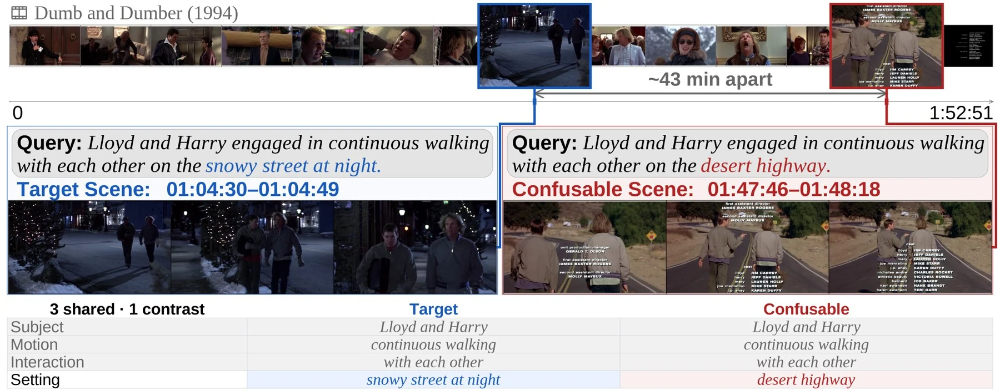
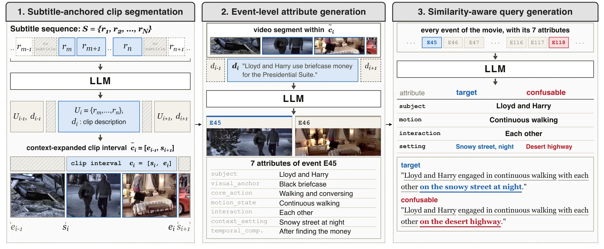
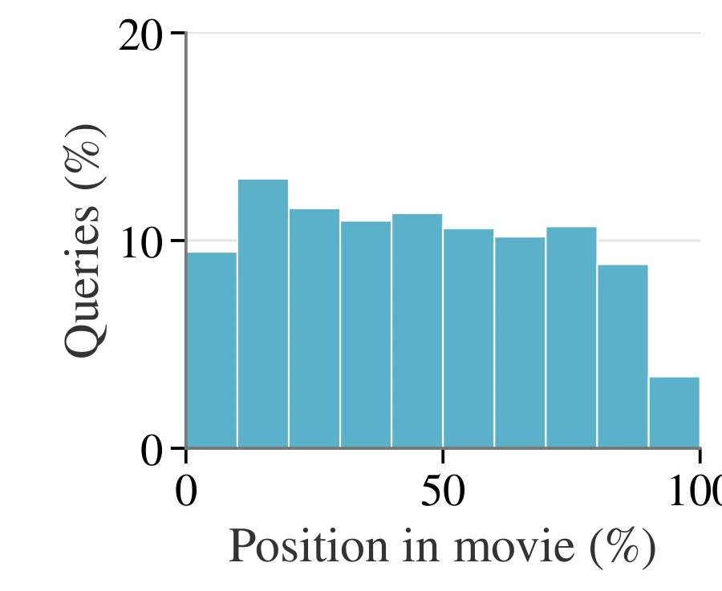
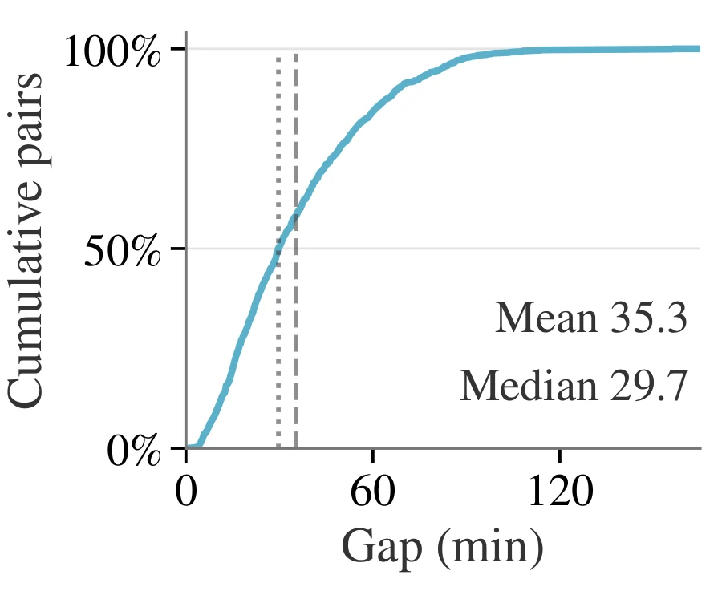
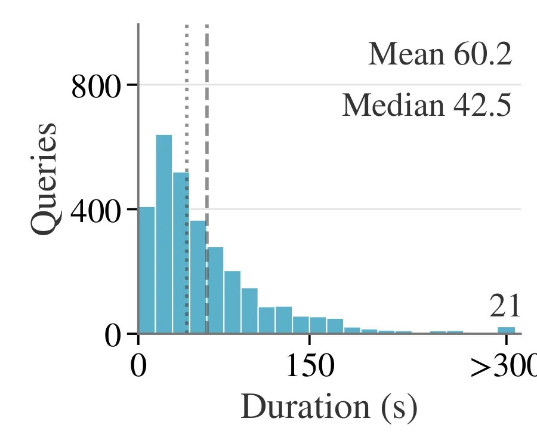
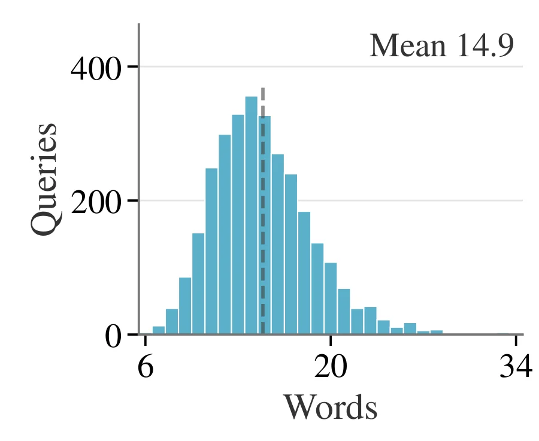
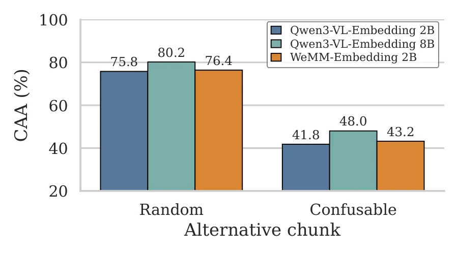
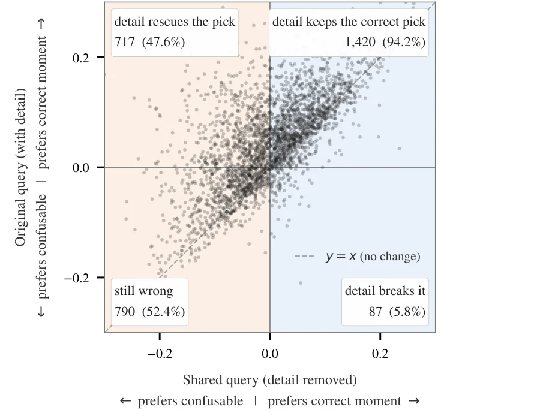
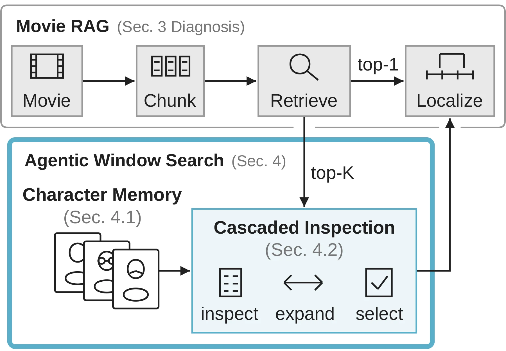

Overview
Characters, locations, and actions recur throughout a movie, so many of its moments differ only in a single detail. Grounding such a moment in a full-length movie requires resolving that detail rather than matching what it shares with other moments, and existing temporal grounding benchmarks rarely test this.
CoM2-Bench
3,014 human-verified queries in 46 full movies, organized as confusable pairs that share three attributes and differ in one. PairSuccess counts a pair only when both moments are grounded.
Retrieval is the bottleneck
In a retrieve-then-localize pipeline, the retriever often picks a moment's confusable partner, because its choice follows the content the two share rather than the detail that tells them apart.
Agentic Window Search
A training-free agent that Decomposes the query, Inspects candidate windows sub-query by sub-query, and Expands a window when evidence is cut off, raising mIoU from 18.5 to 26.8.

CoM2-Bench
Each pair refers to two temporally distant moments in the same movie. The two queries are written in parallel, so only the distinguishing detail separates them. Each query is grounded on its own over the full movie, without its partner as a contrast.
| Benchmark | Scope (avg. min) | Avg. target (s) | # Queries | Confusable moments | Attribute contrast | Pair metric | Video access |
|---|---|---|---|---|---|---|---|
| Charades-STA | clip (0.51) | 8.1 | 3,720 | ✗ | ✗ | ✗ | ✓ |
| QVHighlights | clip (2.50) | 24.6 | 1,542 | ✗ | ✗ | ✗ | ✓ |
| MomentSeeker | long video (20.03) | 12.8 | 1,800 | ✗ | ✗ | ✗ | ✓ |
| CoMET-Bench | long video (33.81) | 6.9 | 2,789 | ✗ | ✗ | ✗ | ✓ |
| MAD | full movie (110.77) | 4.1 | 72,000 | △ | ✗ | ✗ | ✗ |
| CoM2-Bench (Ours) | full movie (117.8) | 60.2 | 3,014 | ✓ | ✓ | ✓ | ✓ |
Confusable moments: ✓ deliberately constructed and verified, △ present but not controlled. Video access: raw frames can be evaluated; CoM2-Bench videos come from ALLVB.





Where does grounding break?
We analyze Movie RAG, a retrieve-then-localize pipeline: a retriever picks a 180-second chunk, and a localizer (TimeLens2) predicts the moment inside it.
R@1@0.3 when TimeLens2 is given the oracle chunk instead of the retrieved one (mIoU 18.5 → 53.8). An oracle localizer on the retrieved chunk reaches only 31.0 mIoU, so retrieval, not localization, limits grounding.
R@1@0.7 when the oracle chunk is also extended by oracle expansion: an upper-bound diagnostic showing that fixed chunks cut events at their edges.


Agentic Window Search
AWS sits between the retriever and the localizer, both unchanged. Instead of one similarity score for the whole query, it checks each part of the query against candidate windows.

Decompose
Split the query into attribute-level sub-queries, so the distinguishing detail is checked on its own.
Inspect
Check top-ranked windows in retrieval order and accept a window only when every sub-query holds. Named characters are matched with a character memory built from the movie's dialogue.
Expand
When evidence is cut off at a window edge, extend the window within a fixed budget before deciding.
Trace Explorer
Real traces of AWS (Qwen3.6-27B verifier with character memory) on 24 curated pairs. Sub-queries and the verifier's notes are verbatim from the run; its decisions EMIT, REJECT and EXPAND are shown as accept, reject and expand. A trace ends with the window AWS selects; the unchanged localizer then predicts the final interval inside it, which is not shown here.
Gold chunk recovered: the retriever's top-1 was wrong, and AWS selected the gold chunk (the chunk covering the most of the ground truth). Window expanded: AWS extended a window. Picked the partner: AWS selected the confusable partner's moment. A pair can carry several tags, and each query shows its own outcome.
Results
Holding Movie RAG's retriever and localizer fixed, AWS raises every metric without any training.
| Model | P@0.3 | P@0.5 | P@0.7 | R@1@0.3 | R@1@0.5 | R@1@0.7 | mIoU |
|---|---|---|---|---|---|---|---|
| VideoChat-T | 0.0 | 0.0 | 0.0 | 0.1 | 0.0 | 0.0 | 0.0 |
| Time-R1 | 0.0 | 0.0 | 0.0 | 0.1 | 0.0 | 0.0 | 0.0 |
| UniTime | 0.5 | 0.1 | 0.0 | 6.0 | 3.9 | 2.1 | 4.8 |
| UniversalVTG | 5.8 | 2.7 | 1.2 | 22.1 | 14.6 | 8.7 | 16.3 |
| TimeLens | 0.0 | 0.0 | 0.0 | 0.4 | 0.3 | 0.1 | 0.3 |
| TimeLens2 | 1.1 | 0.8 | 0.3 | 10.0 | 6.9 | 3.9 | 7.4 |
| Movie RAG | 7.1 | 4.1 | 2.0 | 25.8 | 19.1 | 12.2 | 18.5 |
| Movie RAG + AWS (4B) | 10.6 | 6.4 | 3.0 | 31.3 | 23.6 | 15.1 | 22.5 |
| Movie RAG + AWS (27B) | 15.0 | 8.8 | 3.7 | 37.0 | 28.2 | 17.9 | 26.8 |
P@θ is PairSuccess@θ: the percentage of pairs whose two queries are both grounded with IoU ≥ θ. Adding a reranker or a fine-tuned retriever before AWS reaches 28.2 and 30.6 mIoU.
Dataset
Annotations are on the Hugging Face Hub under CC BY 4.0. Videos and subtitles are not redistributed: obtain them from ALLVB under its terms and match them by movie title.
from datasets import load_dataset
ds = load_dataset("queez0405/CoM2-Bench", split="test")BibTeX
@article{kim2026grounding,
title = {Grounding Confusable Movie Moments},
author = {Kim, Dong-Hee and Choi, Seonwoo and Kim, Changbeen and Ko, Juyeon and
Choi, Youngju and Mun, Il Hyeon and Kim, Hyunwoo J. and Kim, Donghyun},
journal = {arXiv preprint arXiv:2610.23910},
year = {2026}
}